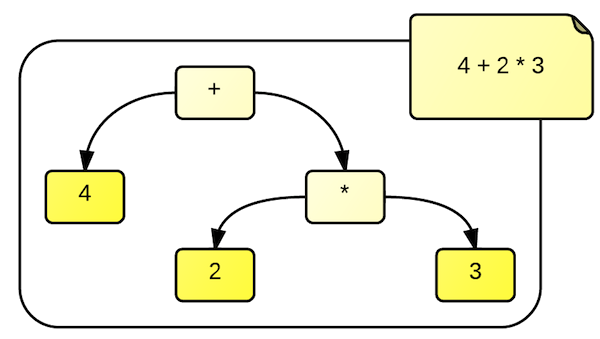

S
Single responsibility
“a module should have only one reason to change”

Rationale
This principle aims to reduce the costs of existing requirements modifications.
The goal should be to identify and modify the source code in one isolated place.
Every requirement should not cause any unwanted side-effects on others.
It's easier to reuse and test code separating responsibilities in different code units.
class Report(object):
def compile(self):
...
def format(self):
...
should be
class Compiler(object):
def compile_report(self, report):
...
class Formatter(object):
def format_report(self, report):
...
Cohesion
- Coincidental (Utility)
- Logical (Keyboard input handlers)
- Temporal (Exception routines)
- Procedural (File operations)
- Communicational (Database operations)
- Sequential (File processing)
- Functional (Lexical Tokenizer)
Benefits
- avoid unwanted side-effects modifing existing requirements
- minimize the number of source code touched for a modification
- increase code reusability, maintainability and testability
O
Open/Closed
“a module should be open for extension
but closed for modification”

Rationale
This principle aims to reduce the costs of new requirements additions.
The running code should not be changed on a new requirement (by design and not by fear).
Openess for changes is often reached by the inversion of dependecies. It's a balanced design decision which part of a system is open or closed, because it's not possible to design a system open for all kinds of new requirements.
Example
We need an evaluator of expression built upon an Abstract Syntax Tree.
operations (visitor)
representations (strategy)
Composite Validators
class CompositeValidator(object):
def __init__(self):
self.validators = []
def add(self, validator):
self.validators.append(validator)
def validate(self, item):
for validator in self.validator:
if not validator.validate(item):
return False
return True
New validators will not touch existing code
Benefits
- avoid unwanted side-effects adding new requirements
- minimize the number of source code touched for an addition
- increase code modularity, evolvability and testability
L
Liskov Substitution
“subclasses should be substitutable for their base classes”

Rationale
This principle would ensure that type hierarchies are well-formed.
LSP is not a technical principle. It's all about semantics and meaning: inheritance is a behaves-like-a relationship and not a is-a one.
When this principle is violated, the OCP is violeted too as a collateral damage.
Duck Typing
LSP speaks first of all about contract with clients. It's true that: “if it swims like a duck, quacks like a duck, but needs batteries, you probably have the wrong abstraction”. But what's up if clients don't need battery? “If it swims like a duck and quacks like a duck, then it’s a duck”.
A typical violation
class Rectangle(object):
def __init__(self, width, height):
self.width, self.height = width, height
@property
def area(self):
return self.width * self.height
rect = Rectagle(6, 6)
area = rect.area
rect.width /= 2
assert area == rect.area * 2
Would Square inherit from Rectangle?
Benefits
- avoid unwanted side-effects adding new requirements
- explicit declare of the contracts
I
Interface Segregation
“no client should be forced to depend on useless methods.”

Rationale
Interfaces provide layers of abstraction that facilitate conceptual explanation of the code and creates a barrier preventing dependencies.
Interfaces declare abstract behaviors that can be composed in implementations, but which should never be aggregated.
public interface Animal {
void fly();
void run();
void bark();
}
Different types of functionalities must be placed in different interfaces.
public interface Flyable {
void fly();
}
public interface Runnable {
void run();
}
public interface Barkable {
void bark();
}
Still Duck Typing
LEFT
D
Dependency Inversion
“depend upon abstraction;
do not depend upon concretions”